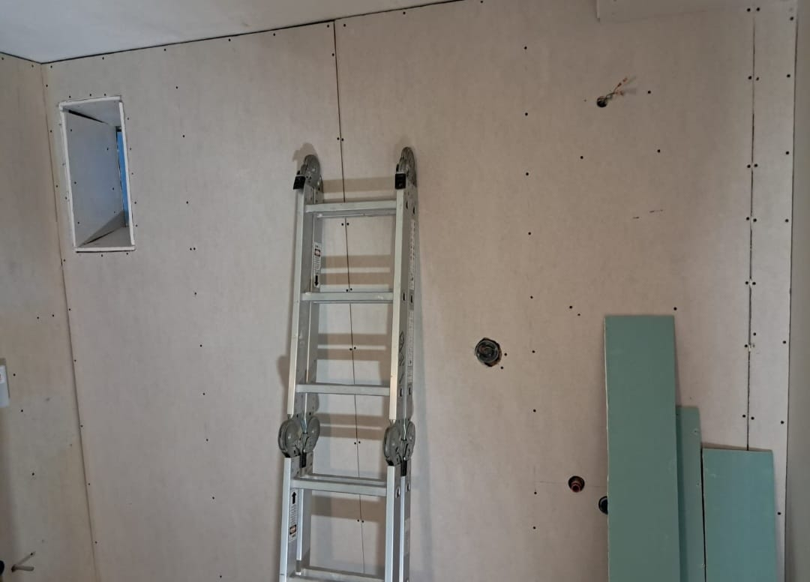
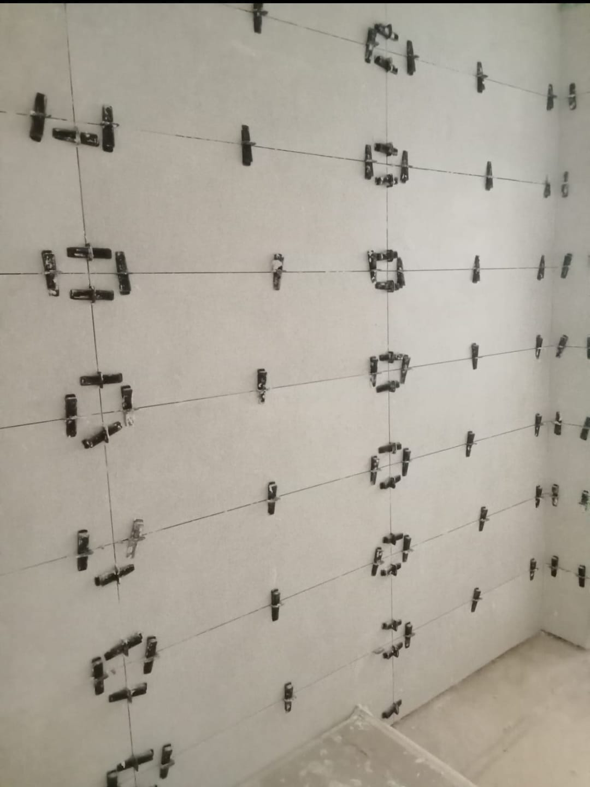
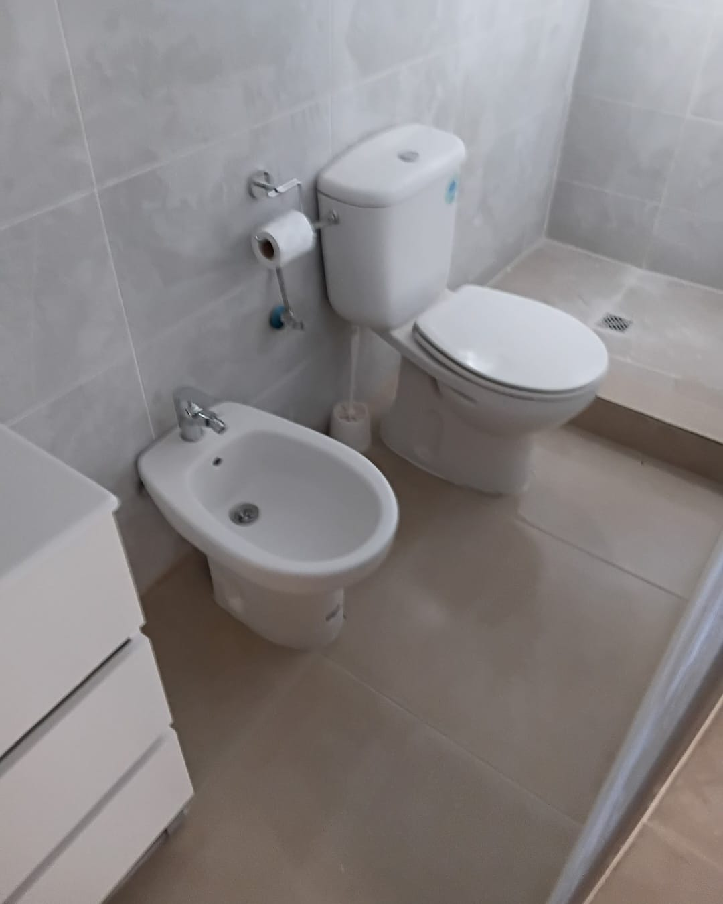
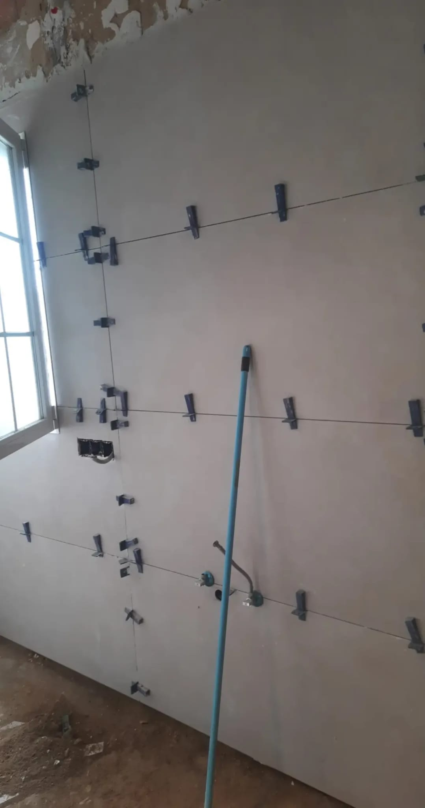
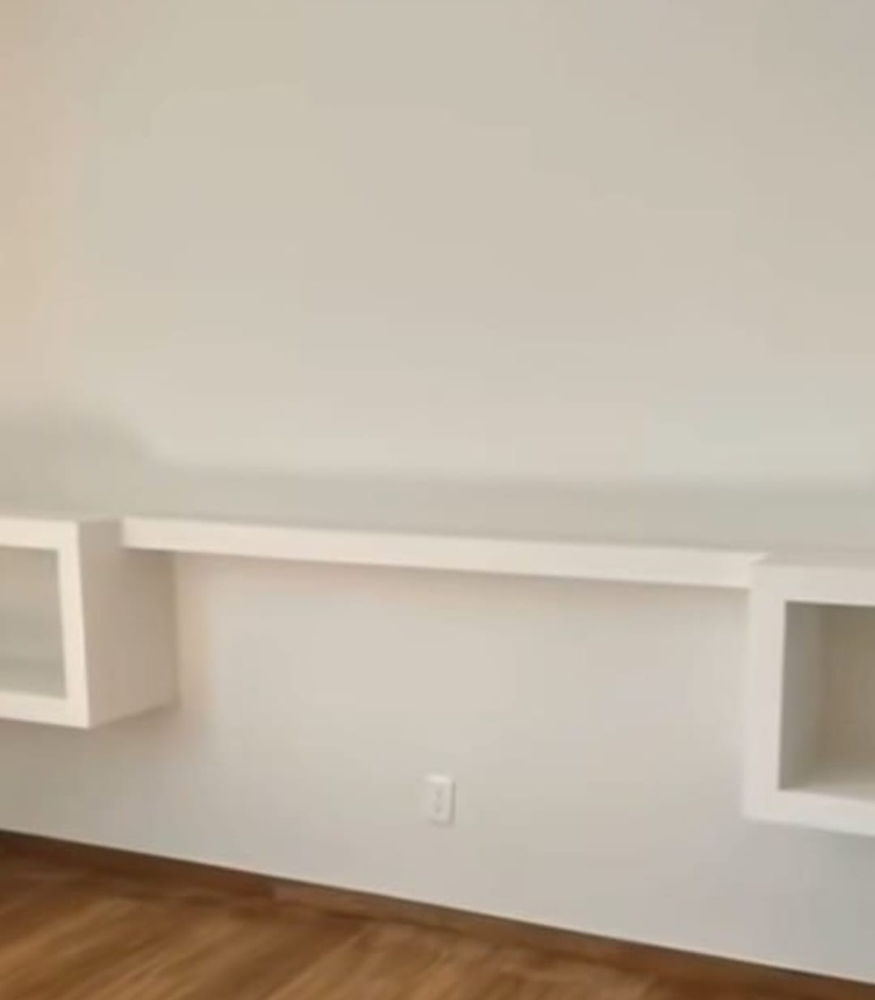
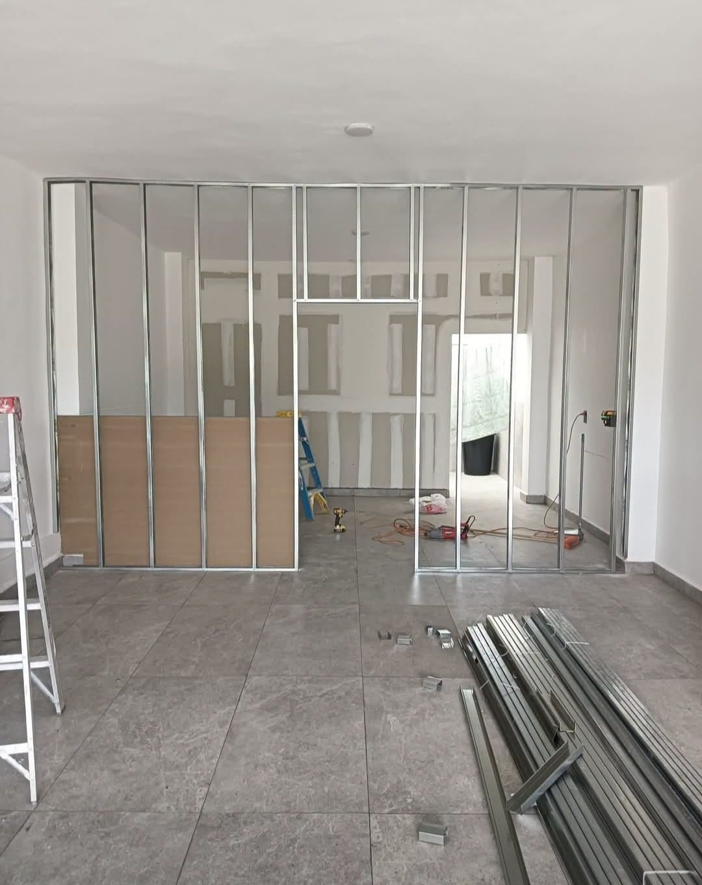
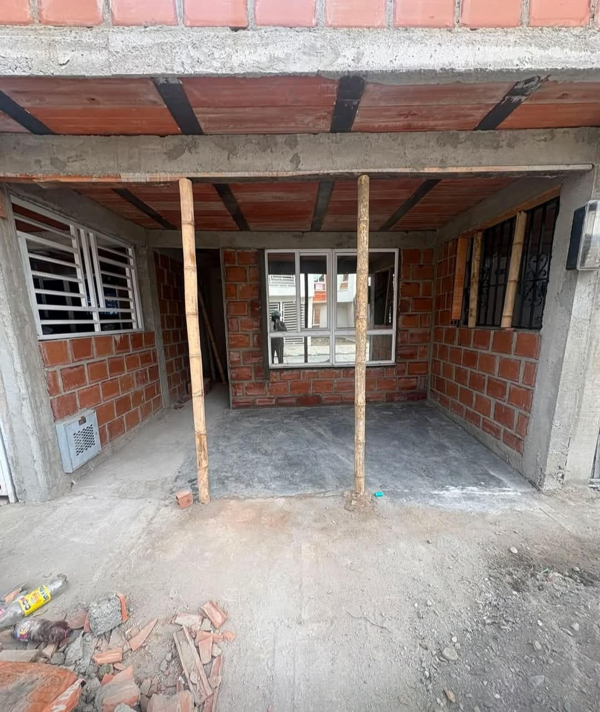
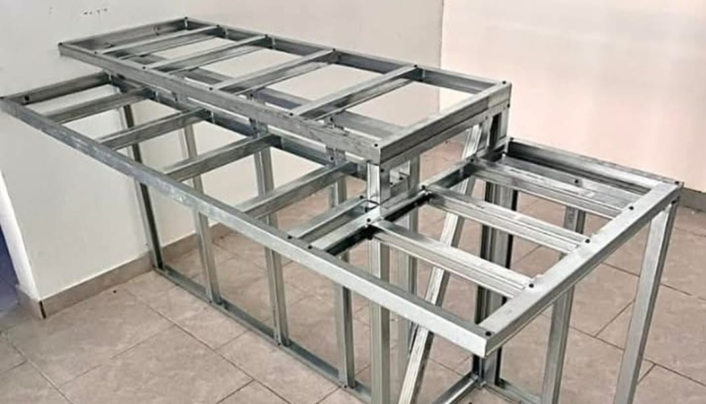

Proyectos y Obras en Valencia
No mostramos catálogos impersonales ni recreaciones por ordenador. Aquí documentamos cada intervención como un caso real: las dificultades del inmueble, las decisiones técnicas tomadas en obra y el resultado final entregado llave en mano.
Grandes Crónicas de Obra
Selecciona cualquier caso para leer la historia completa, ver las fases de obra y los resultados finales

Faura · Pladur & Asistencia 5 fotos documentadasConstruir con Empatía: Un Dormitorio Asistido en Cuatro Días para un Paciente Oncológico
Intervención urgente en un salón para independizar una estancia silenciosa con aislamiento de lana de roca, puerta accesible sin barreras y armario empotrado artesanal en metal.

Valencia · Barrio de Mestalla 4 fotos documentadasEl Salto Radical en Mestalla: Cómo Convertir un Baño Antiguo en un Espacio de Alta Gama
Demolición integral de un aseo de los años ochenta, renovación de tuberías multicapa y alicatado porcelánico rectificado con efecto mármol nivelado con cuñas tensoras.

Alginet · Finca Centenaria 12 fotos documentadasResucitar una Casa de Pueblo Centenaria: La Gran Transformación de Alginet
Secuencia completa de 12 fotografías reales: demolición de baño hasta el bloque, saneado de humedades por capilaridad, solado con puente de unión y entrega de dormitorios y sanitarios.

Calicanto · Baño de 60 m² 3 fotos documentadasEl Reto de los 60 Metros Cuadrados: Alicatado de Gran Formato en Calicanto
Monumental espacio en chalet unifamiliar con fontanería multicapa empotrada, cuñas de nivelación milimétrica continua y falsos techos con molduras de escayola.
 Sagunto · Camp de Morvedre
5 fotos documentadas
Sagunto · Camp de Morvedre
5 fotos documentadas
Oficio Frente al Desastre: El Rescate y Renovación Integral de un Baño en Sagunto
Saneado de paramentos tras una mala experiencia previa, recrecido impermeable para plato de resina C3, alicatado vertical aplomado y mampara de cristal de seguridad templado.
Especialidades Constructivas
Mobiliario técnico en pladur, pérgolas, reformas de baños express y soluciones de albañilería

Mobiliario PladurFrente Flotante de TV con Fosa LED
Mueble a medida suspendido con canalización oculta para cableado, baldas integradas e iluminación ambiental indirecta.
 Benetússer · 48h
Benetússer · 48h
Cambio Exprés de Bañera por Ducha
Retirada de bañera de fundición, recrecido impermeabilizado, plato de pizarra mineral C3 y remate con cenefa griega clásica.
 Torrent · Exterior
Torrent · Exterior
Pérgola Metálica & Panel Sándwich
Estructura soldada con anclajes químicos en solera, cubierta aislante en panel sándwich y canalizaciones eléctricas estancas.
 Oficinas Pladur
Oficinas Pladur
Divisiones Técnicas para Despachos
Mamparas y tabiquería autoportante de placa de yeso laminado con aislamiento acústico para separación de espacios comerciales.

TrasdosadosTrasdosado Aislante en Mirador
Forrado térmico con lana mineral y placas hidrófugas para eliminar puentes térmicos y condensaciones en voladizos.
 Alberic · Baño
Alberic · Baño
Alicatado de Aseo en Textura Pizarra
Reforma de baño estrecho con revestimiento porcelánico tipo pizarra natural, hornacina a medida e iluminación empotrada.

EstructurasEncofrado Tradicional de Forjados
Ejecución de encofrados para losas de hormigón armado, armado de vigas maestras y cálculo de apuntalamiento resistente.

Cocina TradicionalBancada y Revestimiento de Fábrica
Construcción de bancadas de obra, aplacados cerámicos tradicionales y encimeras macizas de ladrillo y hormigón.
¿Tienes un proyecto en mente en Valencia o alrededores?
Venimos a tu vivienda o local, revisamos la estructura y te damos un presupuesto real y transparente con plazos de ejecución por escrito.